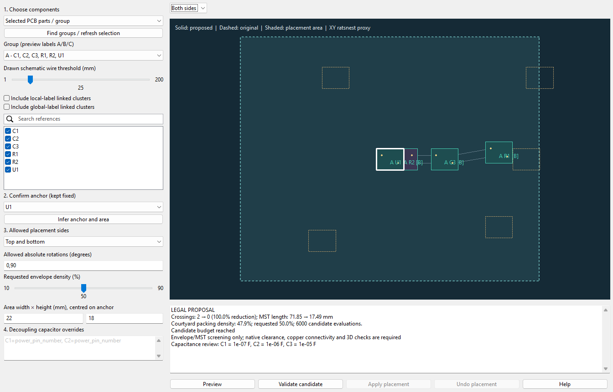

Arrange a chosen set of unrouted PCB footprints around a fixed anchor. Choose a schematic sub-sheet, a PCB group, wire-connected schematic clusters, or check parts yourself. Review the allowed area, original/proposed courtyards, projected connections and measured improvement before applying.

This native synthetic six-part example reduces projected crossings from two to zero and net-MST length from 71.85 to 17.49 mm. It is a fixture, not a result promised for other boards. Dashed courtyards are original positions; solid outlines show the proposal; [B] marks bottom parts. The white outline is the anchor.
1. Save the PCB and matching project, including intended Board Setup changes. A valid closed Edge.Cuts outline and closed courtyards are required. Start with a small unrouted group.
2. Open WayriCAD Component Arranger from PCB Editor. Choose Selected PCB parts / group, Schematic sub-sheet, Native PCB group, Schematic wire clusters, or Manual selection. Search narrows the checked-reference list without clearing hidden choices.
3. Select the group and inspect its A/B/C labels. Check or uncheck its members. For wire clusters, adjust the drawn-wire threshold and review the updated groups. Label jumps are separate: explicitly confirm whether local or global label-linked clusters should be combined.
4. Click Infer anchor and area. The inferred anchor is normally a connected, high-pin-count part. Confirm it in the anchor selector or click a checked footprint in the preview. The anchor stays at its exact original position, side and angle.
5. Choose Top, Bottom, or Top and bottom, desired density and area width/height. The area stays centred on the anchor. Both sides use the same XY region. Default movable-part rotations are 0,90; enter 0,45,90,135,180,225,270,315 to allow all 45-degree orientations. These are absolute board angles, not relative turns.
6. Review the capacitor section below. Click Preview arrangement. Wheel zooms, drag pans and double-click fits. The highlighted rectangle is a hard placement boundary. If no complete legal placement is found, original poses are retained; enlarge the area or reduce the selected group.
7. Inspect before/after crossings, net length, achieved density and warnings. Validate native candidate runs independent before/after native KiCad DRC and pad/via/zone connectivity checks on detached copies with matching saved project rules. No live placement changes during preview or validation.
8. Apply reviewed placement creates a board backup beside the source before moving footprints. Inspect the board, refill zones and run final DRC before saving. Undo placement restores that window's placement transaction. It is not PCB Editor's ordinary Undo; a backup survives closing the window. Undo restores complete native footprint data, including child fields and their identities. Saving or external edits can invalidate window history.
| Control | Behaviour |
|---|---|
| Group | A placement scope; no new KiCad group is created. Native group membership is retained. Non-footprint group items are not moved. |
| Wire threshold | Shortest length along actual drawn schematic wires between pins, in mm. It is not visual straight-line proximity or a routed PCB length. Unjoined wire crossings do not connect. |
| Label-linked clusters | Local/global jumps are shown separately and merged only after explicit opt-in. Parent/child sheet-port mapping, buses and implicit power connections remain warned limitations. |
| Area | Courtyard plus routing reservation must fit inside the rectangle, the actual board outline and its cutouts, outside obstacles/footprint keepouts. The plugin never silently expands a user area. |
| Density | Courtyard area divided by the enclosing occupied rectangle on each permitted side. A screening metric, not actual routing capacity. The search aims within five percentage points, then shorter connections; otherwise it reports the nearest sampled legal result. |
| Routing space | Effective native net-class track width plus clearance reserves space around selected courtyards. Native DRC evaluates the final materialized candidate; custom rules may reject a proposal. This does not prove pin escape or return-path continuity. |
| Side | Movable SMD parts may flip when allowed. Through-hole parts keep their original side and obstruct both sides. Anchor, locks and parts contacting existing copper stay fixed. |
| Crossings | Intersections between different-net straight edges of actual pad/net minimum spanning trees, projected in XY across both sides. This is a ratsnest proxy, not a count of routed shorts. |
The search prioritizes capacitor order, then fewer projected crossings, requested density tolerance, and shorter net/capacitor distances. Zero crossings and more than 90% reduction are goals, not guarantees. Pin mappings and geometry can force crossovers. Results report measured counts, including zero-baseline cases, instead of calling every proposal an improvement.
The engine identifies capacitor-like references/metadata and shared power-like net names. Inference is advisory: confirm the intended anchor power pin. Add overrides such as:
C1=12, C2=12, C3=24Each value is an anchor pad number, not a capacitor pin number. Only electrically shared-net capacitor pads are used for distance. The smallest known capacitance must have the smallest pad-to-pin distance within its assigned pin group; equal known values need no ordering. If the policy cannot be met, the search remains incomplete rather than accepting reversed order.
| Metadata | Interpretation |
|---|---|
100nF, 0.1 uF, 10 µF, 4n7 | Explicit capacitance; converted to farads |
104 in an explicitly named capacitance-code/marking field | EIA code: 100 nF |
104 in an ordinary Value field | Unknown; no invented unit |
| Missing, contradictory or ambiguous values | Reported as unknown; ordering cannot be established for them |
Recognized capacitance/value fields are inspected using explicit-unit patterns and normalized aliases such as Cap Value and Nominal Capacitance. This does not infer a reliable capacitance from an arbitrary part number. Unknown values remain warnings. Value ordering is a requested placement policy, not a universal PDN design rule: package inductance, return vias, stackup and device guidance still determine the real bypass loop. Capacitor distance is a pad-distance proxy, not a loop-inductance calculation.
| Package | Current handling |
|---|---|
| SMD passives, QFP, QFN | Actual native pads/courtyard, rotations, side permissions, routing-space reservation |
| BGA/LGA | Same measured geometry and pad-net objective; explicit escape/via-access warnings. No automatic dogbones, via-in-pad approval or routing qualification. |
| THT/connectors | Both-side obstruction, original side retained; locked/mechanical interfaces should remain fixed |
Bounds: 128 selected footprints, 512 selected plus relevant external pad endpoints, a finite pose-evaluation budget and finite passes. Endpoints are never silently discarded to fit a limit. Missing or malformed courtyards fail actionably. Other footprints use conservative courtyard/body obstacles. Three-dimensional component collisions, height and assembly access require separate mechanical review.
Parts already touching tracks, vias, zones or other footprints are held fixed. This tool does not rip up or move their attached copper. Existing tracks, vias, nets, references and UUIDs are preserved. A complete geometric proposal is not permission to Apply: native validation can still reject existing findings involving the group, new findings, excessive baseline reports, changed connectivity or stale inputs. It does not replace schematic parity checks or final routing.
Saved schematic groups are available from PCB Editor. Live selections in a separate Schematic Editor window are not exposed by this native action; use a sub-sheet, saved wire cluster or explicit references instead. Unsupported hierarchical port/bus/power semantics are reported, not guessed.
Use the matching KiCad native Python with pcbnew, or wayricad-arrange in an equivalent configured environment. Reports and output projects must use new filenames.
python -m component_arranger_plugin.cli C:/Projects/Example/board.kicad_pcb --refs U1,C1,C2,R1 --anchor U1 --sides both --density 0.5 --width-mm 24 --height-mm 20 --report preview.json
python -m component_arranger_plugin.cli C:/Projects/Example/board.kicad_pcb --scope schematic --wire-mm 20 --list-groups
python -m component_arranger_plugin.cli C:/Projects/Example/board.kicad_pcb --scope schematic --group B --include-local-labels --capacitor C1=12 --validate --report checked.json
python -m component_arranger_plugin.cli C:/Projects/Example/board.kicad_pcb --refs U1,C1,C2,R1 --anchor U1 --angles 0,45,90,135,180,225,270,315 --output C:/Projects/Review/arranged.kicad_pcbOmit area dimensions to size a suggested region from reserved envelopes and requested density. --scope sheet and --scope native_groups list/import those scopes. Label flags are explicit CLI authorization to merge those links. JSON includes original/result geometry, anchor, area, metrics, warnings, source hash and validation evidence. Export copies matching project/rules to the new basename; the original remains untouched.
Source/candidate 0.1.0, independently packaged as WayriCAD-component-arranger-0.1.0-PCM.zip. Install with KiCad Manager → Plugin and Content Manager → Install from File, restart PCB Editor. No sibling plugin or IPC API is required. It is not in the published release/feed yet.
See offline help and validation evidence. Windows/KiCad 10.0.6 is the native test target. Other platforms/versions require native verification.
Source guide · Component Arranger 0.1.0 source/candidate